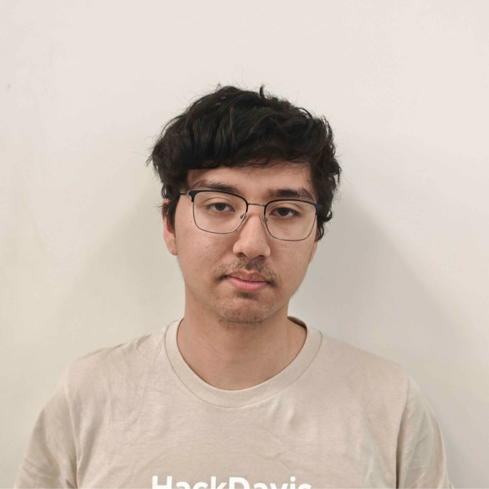
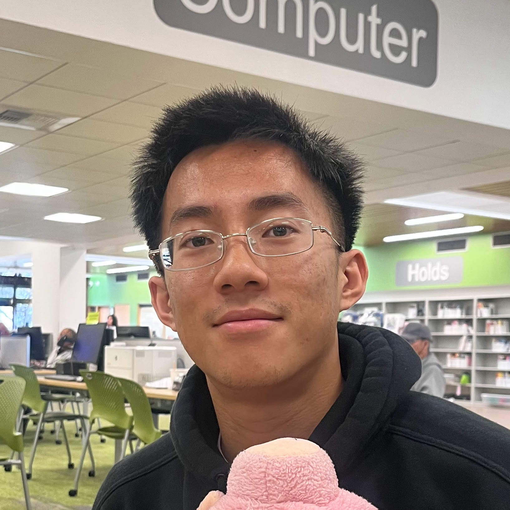
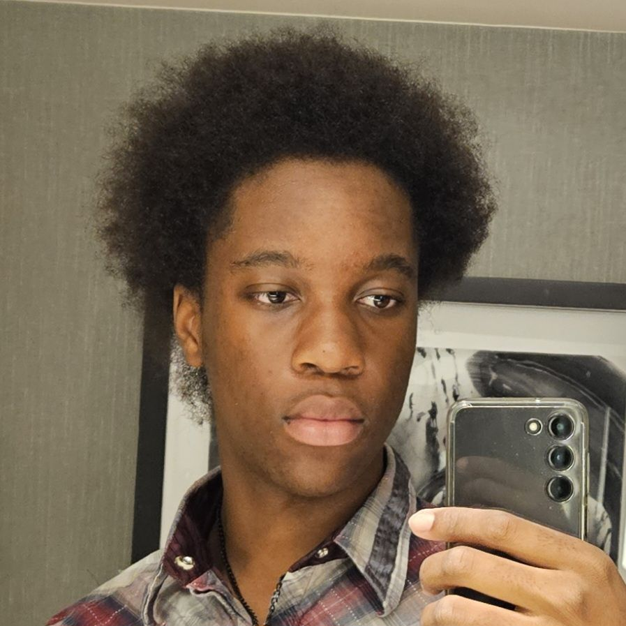

About Us
Anteater Linux User Group at UC Irvine (ALUG@UCI) is a student organization dedicated to providing a space for Linux and open source software on campus. We welcome everyone at UCI of all backgrounds and experience levels to join us in learning, sharing, and collaborating on all things open-source!
A Community-First Approach
At ALUG@UCI, we believe in a community-oriented approach to learning and collaboration.
This is why members are encouraged to play an active role in the direction of the group, and to contribute to the community by helping others learn and collaborate. It’s just like the open source ethos. From the meeting topics to the projects we work on, we are committed to making ALUG@UCI a vibrant and inclusive community that meets everyone where they are.
Meet the Team
Leadership

Chris Rios
Founder & President
View profile →
- Major
- Computer Science B.S.
- Preferred Distro
- CachyOS
- Device(s)
- System76 Adder WS, Steam Deck, and Macbook Air M4
- Fun Fact
- I was born left-handed, but raised right-handed
Kasra Moayedi
Vice-President & Event Coordinator
View profile →
- Major
- Computer Science and Engineering B.S.
- Preferred Distro
- Fedora
- Device(s)
- PC & Thinkpad
- Fun Fact
- I know 6 different programming languages!
Mark Valkin
Secretary
View profile →
- Major
- Computer Science B.S.
- Preferred Distro
- Fedora (Asahi)
- Device(s)
- M1 Mac
- Fun Fact
- I play a video game from 1987

Albert Duong
Project Coordinator & Interim Treasurer
View profile →
- Major
- Software Engineering B.S.
- Preferred Distro
- Arch Linux
- Device(s)
- Dell Latitude
- Fun Fact
- I have a small family of treecko plushies

Ikechi Ezekwe
Public Relations
View profile →
- Major
- Electrical Engineering, B.S.
- Preferred Distro
- Arch Linux
- Device(s)
- Thinkpad X1 Nano Gen 1 with Arch Linux (Sway as my WM)
- Fun Fact
- I'm a huge rhythm gamer with my favorite being sound voltex (｡•̀ᴗ-)✧